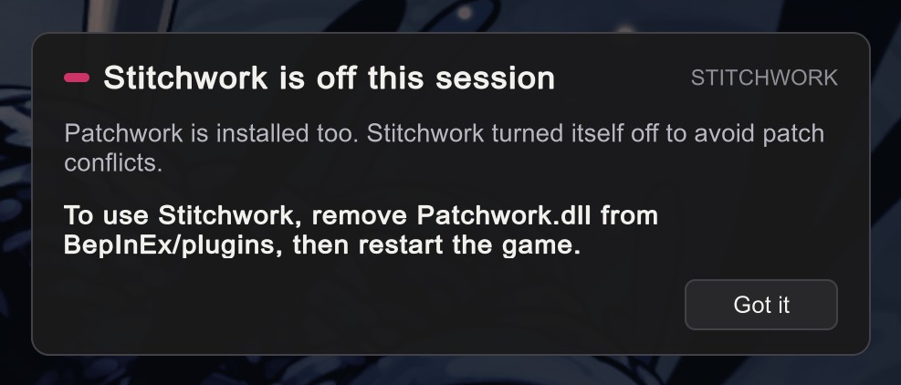

Troubleshooting
Reference · everyone.
Something does not work? Look here.
Common cases come first, rare cases after.
The end shows how to file a useful bug report.
"I don't see anything happen — Stitchwork isn't running"
Move the mouse to the top edge of the screen. If the Packs pull tab drops down, Stitchwork is running. If you turned off Pull tabs, press 1 instead. You can also search BepInEx/LogOutput.log for the line Stitchwork is loaded! Version: X.Y.Z (build …). If that line is not there, Stitchwork didn't load.
The status badge in the bottom-left corner is not a good check. Its eye can tuck it away past the left edge, the Status badge switch in Settings turns it off, and it hides in pick mode and while DebugMod's panels show.
Most common cause: you also have the older mod Patchwork installed. Stitchwork notices and turns itself off for the session. A notice at the bottom right of the main menu says so: Stitchwork is off this session.

To fix: remove Patchwork.dll from BepInEx/plugins/. Note that Architect-Silksong does not require Patchwork and runs fine alongside Stitchwork — only a standalone Patchwork install trips the inert mode.
Other causes:
- BepInEx itself isn't installed. Stitchwork is a BepInEx plugin — without BepInEx 5, it can't load. Check that
BepInEx/core/BepInEx.dllexists in your game folder. - Stitchwork is in the wrong place. Its DLL must sit in a folder one level under
BepInEx/plugins/(recommended name:StitchworkRoot/). The folder name itself doesn't matter — Stitchwork resolves its location from where the DLL loaded — but the DLL can't be loose inplugins/or buried deeper. - An exception during startup. Open
BepInEx/LogOutput.logand search forStitchwork. Errors during the plugin'sAwakewould be there.
"Black screen at launch — the game never reaches the menu"
If the log shows this near the top:
Invalid path in TextDataProvider : '…/StreamingAssets/aa/settings.json'
RuntimeData is null. Please ensure you have built the correct Player Content.
InvalidKeyException: … No Location found for Key=Scenes/Pre_Menu_Introthe problem is in the game install itself, not in Stitchwork. Silksong loads all of its content through that settings.json catalog; when it's missing or damaged the game cannot load even its own main menu, and it parks on a black screen forever. This usually means game files were modified or replaced directly (some older skinning workflows did that) or an install got corrupted.
Fix: Steam → right-click the game → Properties → Installed Files → Verify integrity of game files. Then remove any mods that replace game files directly. Stitchwork never touches StreamingAssets/ — it replaces assets in memory, which is exactly why a Steam verify does not break your packs.
"Menus press left/right by themselves — and confirm acts as cancel"
An invisible hand keeps nudging menu selection sideways, the confirm button cancels instead, and every settings screen insists your bindings are correct. They are — the game is just listening to two controllers, and one of them isn't real.
The tell is in BepInEx/LogOutput.log, near the top:
Joystick connected ("Controller (XBOX 360 For Windows)").If you don't own an Xbox controller, that device is virtual — a translated twin of your real pad. The game receives input from both: the twin's mis-centered axis is the phantom left/right, and the layout mismatch between the two (cross/circle vs A/B) is the confirm/cancel swap.
Something on your PC is creating that twin. The usual suspects, in order:
- A mod that initializes Steamworks inside the game. Confirmed case: SSMP (the multiplayer mod, ≤0.3.1) — its startup
SteamAPI.Init()re-engages Steam's controller translation even with Steam Input disabled for the game (issue reported upstream). Remove the mod (or park it until you're actually hosting) and the twin is gone. - Pad-translator software — DS4Windows, reWASD, BetterJoy and friends create virtual Xbox pads by design. Enable their "hide real controller" option, or close them.
- Steam Remote Play — connected clients get virtual pads that exist only while the game runs, and they ignore the per-game Steam Input setting. Check Steam → Settings → Remote Play for paired devices.
Quick verification for any of these: cause found → the Joystick connected line disappears from the next launch → menus sane.
Another mod's UI EventSystem
A second, separate cause produces the same symptoms without any Joystick connected line — typically only after returning to the main menu from a play session: a mod's UI EventSystem. A mod can make a second EventSystem for its own windows. If that EventSystem stays awake after its window closes, it can drive the game's menus. If you use Stitchwork 0.8.1, update: that version had this problem.
To find the mod, look for the [ESWatch] lines in the log. They are always on. Each time the control of the menus changes, a line names the EventSystem that has control. When another EventSystem drives the menus, the second line below is the warning:
[ESWatch] current '<path>' (<module>, navigation on|off) …
[ESWatch] '<path>' (…) is current with navigation on, not the game's EventSystem: a controller can act by itself in the menus.The name in that warning is the cause. ([InputProbe] lines show only while the Packs panel is open.)
A Stitchwork window in the main menu
A third case: a Stitchwork window used in the main menu, with another mod installed that has its own window (UnityExplorer, for example). Since 0.9.0, Stitchwork gives the menus back to the game when its window closes. On an older build, update. If a controller still acts by itself, do not start the game again. Send BepInEx/LogOutput.log: it has an [ESWatch] line each time the control of the menus changes.

little bomey @everydruidwaswr · May 1, 2020
fighting ghosts: never fun
"I can't type into Stitchwork's fields while UnityExplorer is open"
By default, Stitchwork steps aside while the menu of UnityExplorer (or CinematicUnityExplorer) shows: Stitchwork's panels close, and Stitchwork's keys open nothing. Explorer shows its menu at the start by default. Press F7 to hide it, and Stitchwork comes back.
To keep both open, switch off Step aside for in Settings › General (it shows only when one of the two mods is installed). Then a Stitchwork text field shows a caret but ignores your typing while Explorer's menu shows. Hide the menu (F7) and type: the field works normally.
"The log says Conflicting plugin detected: 'Customizer'"
If the log shows "Conflicting plugin detected: 'Customizer'" (or another Customizer variant), remove those DLLs from BepInEx/plugins/. They patch the same sprite hooks as Stitchwork, and the two conflict (broken sprites, odd enemy behavior). Stitchwork does the same job. The other mods to remove are in Getting Started.
"I dropped a sprite PNG in but nothing changed"
A.k.a. "sprite replacement not showing" — the most common new-creator question.
Check the file path
The path matters. Common mistakes:
Sprite/instead ofSprites/— note thes.- Wrong collection name — it's case-insensitive but must match the in-game collection. Use Graphics › Animation to verify the exact name.
- Wrong material name — same.
- Wrong sprite name — the filename (without
.png) must match the sprite name.Idle_0.pngandidle_0.pngboth work;idle 0.png(with space) andidle-0.png(with dash) don't. .PNGextension uppercase — usually fine, but case-sensitive filesystems will fail. Use lowercase.pngto be safe.
Did the file watcher pick it up?
Stitchwork has hot-reload — file changes are detected and applied a moment later. If your file is in the correct path but the game isn't picking it up:
- Try a scene transition (walk through a door). The scene-load path re-applies replacements unconditionally.
- Turn the pack off in the Pack Manager (Packs). Click Apply. Turn the pack on, then click Apply again.
- Check
BepInEx/LogOutput.log— look for[Stitchwork]entries near the time you saved the file. You should see a "reload" log line.
Is that frame on screen now?
If the character is in an animation and shows a different frame, your replacement shows only when that frame plays. Wait until the right frame is on-screen (idle, mid-attack, specific expression).
For Animator-driven sprites that change per-frame, the replacement is applied each time the frame shows.
Does a short effect still show vanilla art?
Some effects live for less than a second, and Stitchwork can miss them. Open Utilities › Probes › Advanced. Under Scan refresh, in seconds, click Default · 0.05. That sets UninitCheckCacheRefreshSeconds to 0.05, which is the default now. A config saved by an older build keeps the old value, 0.30. A lower value finds short effects sooner. If busy rooms stutter after the change, drag the lever to a higher value, for example 0.30. The change applies at once.
"White specks around the edges of my art"
You see thin white or light specks along the outline of your art in the game. In your art program, the same art looks clean.
Why it happens. Each pixel of a PNG has a color and a transparency. A fully transparent pixel is invisible, but it still has a color. Clip Studio Paint saves white as that color. When the game draws your art, it mixes each edge pixel with the pixels next to it, so that the edge looks smooth. This mix also uses the color of the invisible pixels, so the hidden white gets into the outline:
| Edge pixel of your art | Invisible pixel next to it | What the game shows at the edge |
|---|---|---|
| Dark red | White (Clip Studio Paint saves it) | A light speck |
| Dark red | Dark red (after a clean) | Dark red, with no speck |
The game's own art does not have this problem.
What to do. Find the case that fits you:
- You only play. You do not have to do anything. Clean sprite edges (CSP fix) in Settings › Rendering removes the specks in your game. It is on by default. Your files do not change.
- You make a pack. Clean the files before you share them. Click the Pack Doctor (the stethoscope on the pack card). When the report finds light edges, the Pack Manager offers to clean the files. The clean gives each invisible edge pixel the color of the art next to it. The art looks the same, and every player gets clean edges, even a player who turned the setting off. Stitchwork first copies each file that it changes to
Backups/clean-edges/in your working folder. The Pack Manager has the details. - You want to fix it in your art program. Use a selection tool, such as the lasso, to select only the part of the outline that shows specks. Then apply a Gaussian blur with a low strength to the selection. The blur makes the outline fade out over a pixel or two. The game then mixes the hidden white only with pixels that are almost transparent, so the specks become very faint. The blur also makes the outline a little softer, so keep the selection small and the strength low. The hidden white stays in the file: the clean in case 2 is the complete fix.
"The game stops for a moment when a pack applies"
While the progress bar fills, the game keeps running: Stitchwork reads the pack images in short steps between frames, and the art on the screen comes first. The last step, Finishing…, reloads the sounds, the text and the fonts, one part per frame. This step can still stop the game for a short time. The log names the slow part, so send LogOutput.log if the stop is long.
An Apply does only the work that changed: atlases and sounds whose files did not change stay as they are.
SlicedReloadBudgetMs under [Performance] in the config sets how much of each frame an apply can use (default 12 milliseconds). A higher value gives a faster apply and a lower frame rate while it runs.
"Some text is invisible / garbled after a pack apply"
Symptom: applied a pack, now some text shows as boxes (□□□), gibberish, or is missing entirely.
- Boxes in replacement text — a translation, a rare character, a script the game never uses — mean the game's font doesn't have those characters. Drop a font that has them into
Fonts/_fallback/; see Fonts. A brand-new character can show as a box for about two seconds the first time it appears; that's the bake catching up, not a failure. - Old packs with a T2D file named like a font (
font.pngand friends) used to garble all system text. Stitchwork now refuses to replace a font atlas, so that can't happen any more; renaming such files after the atlas they target is still good hygiene.
If you still see garbled text:
- Identify the offending pack: turn off one pack at a time, and click Apply after each change.
- File a bug report with the pack name and what you see (see "Filing a useful bug report" below).
"Two packs target the same thing — what wins?"
The pack with the higher priority. In the Pack Manager, packs are listed in priority order top-to-bottom. To change priority: drag a pack card up or down in the Pack Manager. After reordering, hit Apply.
My pack used to work, and now it doesn't after I added another pack. The likely cause: the new pack overrides the same files. The COVERED fold lists the places where two or more packs target the same asset, and tells you which pack shows over which. The status badge in the bottom-left corner shows "N covered" when the count is above zero — useful as a "how messy is my current setup" gauge.
If the new pack shouldn't be overriding what your pack does, that's a bug in the new pack — its files are mis-named or its scope is broader than intended. Report it to that pack's author.
"A Stitchwork panel is stuck somewhere weird"
Double-click the panel's title plate: the panel goes back to its home place. A drag cannot take a panel off the screen, because a part of it always stays in view. A panel rolled against a screen edge does not move: unroll it first. A floating panel rolled up to its bar still drags by the bar.
If that does not help, close the game and edit BepInEx/, in the [GUI] section:
- For Packs, set
CanvasPMXandCanvasPMYto0. - For the Dev Hub panels, make
DevHubPanelsempty.
If a panel's contents are blank, or the interface stops responding, copy the log before you restart the game, and send it — that's a bug worth reporting. Stitchwork writes a snapshot of its interface to the log by itself when a panel goes missing, a click does not reach a panel, or Stitchwork has an error.
"My Stitchwork panels vanished"
- DebugMod's panels appeared. They close Stitchwork's panels. While they show, Stitchwork's keys open nothing, and a message says so. Hide DebugMod's panels with DebugMod's toggle key, then press the tab's key again. See Companion Mods.
- Another mod's menu is open. Stitchwork steps aside in the same way for Benchwarp's menu, FsmMaster's overlay, Architect's edit mode and UnityExplorer's menu. A Stitchwork key then shows a notice that says what to do. See Companion Mods.
- You opened another window. Packs, Settings and the Dev Hub panels never show together: open one, and the others close. Packs keeps your staged changes.
- A right click rolled them. A rolled panel is a thin bar at its screen edge that shows its name. Right click again, or click the bar, to unroll it.
- Esc does not close or cancel anything in Stitchwork. Esc belongs to the game, so it opens the game's menu. To cancel in Stitchwork, use a right click.
"Audio replacement plays the wrong audio / cuts off / restarts"
| Symptom | Cause | What to do |
|---|---|---|
| A one-shot sound effect plays vanilla once, then your replacement | Expected the first time a sound fires after you enable the pack. Stitchwork loads the replacement file asynchronously, and the first trigger fires before the load completes. Later triggers use the cached replacement. | Nothing. If it continues after the first trigger, file a bug. |
| Music restarts on a scene transition | An old bug, now fixed. | If a current build does it, file a bug. |
| Music continues to play the OLD track after a pack switch | Looped audio does not fetch the buffer again when its AudioClip changes. Stitchwork forces a clean swap (Stop+Play) for looped tracks whose file changed, so this should be fixed. | If you still see it, file a bug. |
A track whose file did not change keeps playing through an Apply.
"My anchors.txt file stopped doing anything"
anchors.txt is no longer read. Stitchwork logs a one-time warning when it finds one. Anchors now live in the PNG file name as a trailing tag: @t top, @l left, @r right, @c center, and no tag (or @b) for the default bottom. Rename your sprite PNGs accordingly and delete anchors.txt. See Bigger Art: Anchors for the full migration steps.
Filing a useful bug report
A useful bug report includes:
- Stitchwork version. Check the footer of the Packs panel or of Settings ("Stitchwork X.Y.Z"), or the log line
Stitchwork is loaded! Version: X.Y.Z (build …). The log line also names the exact build. - What you did. Specific steps that lead to the bug. "It crashed when I opened the game" is less useful than "It happened after I loaded a save and walked into Greymoor."
- What you expected vs what happened.
- Other mods installed. List them — particularly anything that patches sprite, audio, or text loading. Many bugs are mod interactions.
- The log file. Attach
BepInEx/LogOutput.logif it's a reasonable size (zip it if it's big). Without the log, we're guessing. To find it, open Settings › Advanced and click Show in folder. The BepInEx folder opens, with the log selected on Windows and macOS. Each game start overwrites this file, so copy it before you restart. - Screenshots or short clips. For visual bugs especially — "the text is garbled" is much clearer with a screenshot showing exactly what garbled looks like.
A healthy start looks like this (from a real log; the paths are shortened):
[Info : BepInEx] Loading [Stitchwork 0.9.0]
[Info :Stitchwork] Stitchwork is loaded! Version: 0.9.0 (build …, dll written 2026-10-16 04:54 UTC)
[Info :Stitchwork] [Stitchwork] Install root: <profile>\BepInEx\plugins\SilksongSkinCreators-Stitchwork
[Info :Stitchwork] [Stitchwork] Working folder: <Game folder>\Stitchwork
[Info :Stitchwork] [PackManager] Global packs root: <Game folder>\Packs — 34 pack(s)
[Info :Stitchwork] [VideoHandler] Reload: 1 video replacement(s) — 0 from pack(s), 1 from root (<Game folder>\Stitchwork\Videos): Intro_Cinematic
[Info :Stitchwork] [Audio] Reload: kept 0 unchanged clip(s); 2 to load.
[Info :Stitchwork] [Health] 9 OK — all checks green.
[Info :Stitchwork] [Scene] 'Menu_Title' loaded
[Info :Stitchwork] [SpriteLoader] Index rebuilt: 41 sprite file(s), 1 sheet file(s), 11 collection(s) with files, 0 clip override(s) (0 from pack(s), 0 from root); 42 key(s) changed their file; 43.8 ms.
[Info :Stitchwork] [ReloadTiming] LoadCollection 'Knight': 43 ms; sheets decoded=0 (0 ms) cached=0; sprites drawn=4
[Info :Stitchwork] [SpriteLoader] Reload complete: 9 replacement(s) drawn across 5 atlas(es) (3270 sprite def(s) walked) — Knight=4, Tools Cln=2, Prompts Cln=1, Bone Beast Child Call Cln=1, Knight(Hollownest)=1 — 2 rotated — atlas VRAM 20 RT/1072 MB — kept 8 unchanged material atlas(es)Stitchwork is loaded!names the version. If this line is missing, BepInEx did not load Stitchwork.[Health] 9 OKmeans that every health check passed. A failed check shows asWARN, with its name on the next line.[PackManager]tells you how many packs Stitchwork found on the shelf.[SpriteLoader] Reload completecounts the replacements that Stitchwork drew, for each collection.- Read the
WarningandErrorlines first.
Let me see. Hm. Not haunted, indeed. No Silk-sickness. But something strange has certainly clawed its way in!
Belltown · DOCTOR_CURSE_OFFER
Known limitations
Known limitations of the current release — with workarounds where they exist, and not expected to block normal use.
- Same-name atlas pages, whole-sheet files. When one T2D atlas has several pages of the same size, a whole-atlas file named only by its clean name (
Hornet.png) can't tell them apart. Put the page number in the file name — see One name, several pages. Per-sprite files are not affected. - Color grading can briefly drop under heavy pack loads. The reproducible cause was fixed; a residual remains where, with many packs active, scene color grading may momentarily look absent on some scene entries. Re-entering the scene — or hitting Apply in the Pack Manager — restores it.
- Incremental GC (
AutoEnableIncrementalGC) and "Verify integrity of game files". Stitchwork enables Unity's incremental garbage collector (via the game'sboot.config) for steadier frame times. If you ever run Steam's Verify integrity of game files, that resetsboot.config— Stitchwork detects it and re-applies the setting on the next launch (you'll see a restart notice). Nothing to do by hand. - Keep only one copy of
Stitchwork.dll. A leftover second copy anywhere underBepInEx/plugins/— an old install you renamed, a backup, an unzipped release folder — trips BepInEx's duplicate-plugin guard and causes confusion. Delete stray copies; keep exactly one. Your own work doesn't live next to the DLL: it's in the working folder,<Game folder>/by default, which the Dashboard shows. See How Stitchwork Works.Stitchwork/ - Patchwork coexistence. Stitchwork stays off while
Patchwork.dllis installed: see Getting Started.
For anything not listed here, check the current release notes or the community channel the latest release points to.